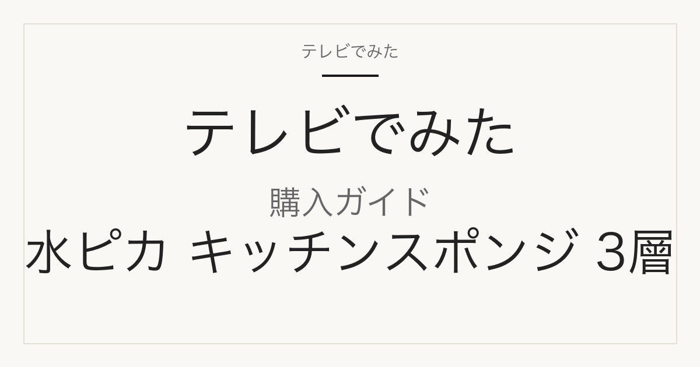

購入ガイド
マーナ 水ピカ キッチンスポンジ 3層（K841）はどこで買える？単品・セット・似た商品の違い
サタプラ 2026年9月5日 キッチンスポンジ 総合2位で紹介

どこで買える？
マーナ「水ピカ キッチンスポンジ 3層」（K841）は、楽天のマーナ公式楽天市場店とリビングートで単品396円（税込）が買えます（2026-09-09 14:28確認、グリーン・グレーとも売り切れ表示なし）。単品は送料別で、マーナ公式楽天市場店は税込3,980円未満だと宅急便600〜1,000円がかかるため、まとめ買いなら同店の10個セット3,960円（送料無料）か、くらしのもりの5個セット2,090円（送料別）があります。楽天以外では、マーナ公式オンラインショップ（marna.jp）でも396円で販売され、税込3,000円以上で送料無料です。番組で紹介されたのは「3層」で、同じ水ピカシリーズの「薄型」K839や「ミニスポンジ 2個入」K840は別商品です。

この記事には広告・アフィリエイトリンクが含まれます。正式商品名・型番・容量はメーカー公式または正規販売ページで確認しています。価格・送料・在庫は確認日時時点のもので変わります。価格の安さ・在庫の有無・配送日数は、確認した範囲と日時を添えた事実だけを書き、断定していません。
番組で紹介された商品の正式名称と仕様
| メーカー | マーナ（株式会社マーナ） |
|---|---|
| 正式商品名 | 水ピカ キッチンスポンジ 3層（グリーン K841G／グレー K841GY） |
| 型番・品番 | K841（グリーン K841G／グレー K841GY） |
| JAN | グリーン 4976404014010／グレー 4976404014027 |
| 容量・サイズ | 1個（サイズ約65×120×37mm） |
| バリエーション | 色はグリーン（K841G）とグレー（K841GY）の2色。入数は単品1個のほか、楽天ではくらしのもりの5個セット（グリーン5個／グレー5個）、マーナ公式楽天市場店の10個セット（グリーンセット／グレーセット／MIXセット）がある。同じ「水ピカ」シリーズには別商品として「キッチンスポンジ 薄型」K839（約150×90×15mm・418円）と「ミニスポンジ 2個入」K840（約55×90×17mm・374円）があり、番組の総合2位は「3層」K841のみ。 |
メーカー公式オンラインショップ（marna.jp）で確認：商品番号 4976404014010 K841G（グリーン）／4976404014027 K841GY（グレー）、材質 布面/アクリル（ハード樹脂加工）・スポンジ/ポリウレタン、サイズ約65×120×37mm、原産国 日本、価格396円（税込・税抜360円）。公式ショップでは本品は宅急便扱い（宅配便（ヤマト運輸）でのお届け）で、税込3,000円以上で送料無料、未満は関東600円・その他本州/四国800円・北海道/九州/沖縄/離島1,000円（2026-09-09 14:28確認）。
販売先ごとの入数・価格・送料
| 販売先 | 商品名・型番 | 入数 | 確認時価格 | 送料 | 確認日時 |
|---|---|---|---|---|---|
| マーナ公式楽天市場店 | 水ピカ キッチンスポンジ 3層【マーナ公式】K841 単品（カラー選択：グリーン／グレー） | 1個 | 396円（税込） | 送料別。合計3,980円（税込）以上で送料無料、未満は宅急便 関東600円・その他本州/四国800円・北海道/九州/沖縄/離島1,000円（メール便270円はメール便対応商品のみで、本品ページに対応表記なし） | 2026-09-09 14:28 |
| マーナ公式楽天市場店 | 水ピカ キッチンスポンジ 3層 10個セット【マーナ公式】X175（グリーンセット／グレーセット／MIXセット） | 10個 | 3,960円（税込） | 送料無料 | 2026-09-09 14:28 |
| リビングート 楽天市場店 | marna マーナ 水ピカ キッチンスポンジ 3層 単品（内容量1個・種類：グリーン／グレー） | 1個 | 396円（税込） | 送料別（金額はページで未確認） | 2026-09-09 14:28 |
| お弁当グッズのカラフルボックス | marna マーナ 水ピカ キッチンスポンジ 3層 単品【3980円以上送料無料】（内容量1個・グリーン／グレー） | 1個 | 396円（税込） | 3,980円以上送料無料（未満は送料別、金額はページで未確認） | 2026-09-09 14:28 |
| くらしのもり | 5個セット マーナ 水ピカ キッチンスポンジ 3層 K841G/K841GY（グリーン_5個セット／グレー_5個セット。URL末尾は4setだがページ本文の入数は5個） | 5個 | 2,090円（税込） | 送料別。北海道・沖縄・離島は追加送料 | 2026-09-09 14:28 |
| マーナオンラインショップ【公式】 | 水ピカ キッチンスポンジ 3層（グリーン K841G） | 1個 | 396円（税込） | 宅急便のみ（宅配便）。税込3,000円以上で送料無料、未満は関東600円・その他本州/四国800円・北海道/九州/沖縄/離島1,000円 | 2026-09-09 14:28 |
| マーナオンラインショップ【公式】 | 水ピカ キッチンスポンジ 3層（グレー K841GY） | 1個 | 396円（税込） | 宅急便のみ（宅配便）。税込3,000円以上で送料無料 | 2026-09-09 14:28 |
| くらしのもり | 【別商品】マーナ 水ピカ キッチンスポンジ 薄型 K839G/K839GY（約150×90×15mm・番組の「3層」とは別） | 1個 | 418円（税込） | メール便発送商品（日時指定・代引き不可） | 2026-09-09 14:28 |
| マーナ公式楽天市場店 | 【別商品】水ピカ ミニスポンジ 2個入 K840（約55×90×17mm・番組の「3層」とは別） | 2個入 | 374円（税込） | メール便対応商品（同店メール便 全国一律270円） | 2026-09-09 14:28 |
価格・在庫表示は2026-09-09 14:28に各ページをcurlで開いて確認したもの。単品4件・5個セット・10個セットはいずれも売り切れ表示なし（楽天の在庫数は非表示設定）。楽天の送料は店舗ごとに条件が異なるため、購入時にカートで確認が必要。マーナ公式楽天市場店には薄型K839の商品ページがなく（404）、薄型は他店ページを案内している。
似た商品・別容量との違い
単品と5個・10個セットの違い（入数・価格・送料）
単品はマーナ公式楽天市場店・リビングート・カラフルボックスとも396円（税込）で送料別。マーナ公式楽天市場店は税込3,980円未満だと宅急便600〜1,000円がかかる。10個セット（同店・品番X175）は3,960円で送料無料、色はグリーンセット／グレーセット／MIXセットの3択。くらしのもりの5個セットは2,090円（送料別・北海道/沖縄/離島は追加送料）で、URL末尾が「4set」だが入数は5個。1個あたりは単品と10個セットが396円、くらしのもりの5個セット（2,090円）は約418円。
グリーン K841G とグレー K841GY の違い
色違いの2品番で、JANはグリーン 4976404014010／グレー 4976404014027。サイズ約65×120×37mm・材質（布面/アクリル ハード樹脂加工、スポンジ/ポリウレタン）・価格396円は共通。楽天の単品ページはカラー選択式で、どちらの色も同一URLから選べる。
「水ピカ キッチンスポンジ 薄型」K839 との違い
薄型は約150×90×15mmの一枚もの（片面ハード加工＋中身ポリウレタン）で、二つ折りにして使うタイプ。公式価格418円、JANはグリーン 4976404012542／グレー 4976404012511。公式ショップでは2点までメール便可。番組の総合2位は約65×120×37mmの「3層」K841で、薄型は対象外。
「水ピカ ミニスポンジ 2個入」K840 との違い
ミニスポンジは本体約55×90×17mmが2個入りで公式価格374円、JANはグリーン 4976404013983／グレー 4976404013990。蛇口やシンク、食器の予洗い向けの小型品で、公式ショップではメール便可。「2個入」表記があるため3層のセット品と取り違えやすいが、番組で紹介された商品ではない。
購入前によくある質問
番組の396円は単品の価格？楽天でも同じ値段で買える？
396円はメーカー希望価格（税込）で、単品1個の価格です。2026-09-09 14:28時点で、マーナ公式楽天市場店・リビングート・カラフルボックスの単品ページとマーナ公式オンラインショップはいずれも396円（税込）でした。ただし単品は送料別です。
単品を1個だけ買うと送料はいくら？
マーナ公式楽天市場店は税込3,980円未満だと宅急便で関東600円・その他本州/四国800円・北海道/九州/沖縄/離島1,000円（2026-09-09確認）。本品はメール便対応の表記がありません。マーナ公式オンラインショップも本品は宅急便のみで、税込3,000円未満は同じ600〜1,000円です。リビングート・カラフルボックスは送料別で、金額はページ上で確認できませんでした。
送料をかけずに買う方法は？
マーナ公式楽天市場店の10個セット（3,960円・税込）は送料無料の表記があります（2026-09-09確認）。色はグリーン10個・グレー10個・MIXから選べます。5個セット（くらしのもり 2,090円）は送料別です。
「薄型」や「ミニスポンジ」も番組で紹介された商品？
いいえ。番組の総合2位は「水ピカ キッチンスポンジ 3層」（K841、約65×120×37mm）です。「薄型」K839（約150×90×15mm・418円）と「ミニスポンジ 2個入」K840（約55×90×17mm・374円）は同じ水ピカシリーズの別商品で、楽天検索では混在するので品番で見分けてください。
出典・確認方法
- マーナ公式オンラインショップ「水ピカ キッチンスポンジ 3層（グリーン）」K841G
- マーナ公式オンラインショップ「水ピカ キッチンスポンジ 3層（グレー）」K841GY
- マーナ公式オンラインショップ「水ピカ キッチンスポンジ 薄型」K839G
- マーナ公式オンラインショップ「水ピカ ミニスポンジ 2個入り」K840G
- マーナ公式楽天市場店「水ピカ キッチンスポンジ 3層」K841 単品
- マーナ公式楽天市場店「水ピカ キッチンスポンジ 3層 10個セット」X175
- リビングート楽天市場店「水ピカ キッチンスポンジ 3層」
- カラフルボックス「水ピカ キッチンスポンジ 3層」
- くらしのもり「水ピカ キッチンスポンジ 3層 5個セット」
- くらしのもり「水ピカ キッチンスポンジ 薄型」K839
- マーナ公式楽天市場店「水ピカ ミニスポンジ 2個入」K840
- テレビでみた「サタプラ スポンジ／サタプラ ラップ 総合ベスト3（2026年9月5日）」
公開：2026年9月9日／最終更新：2026年9月9日。掲載内容は確認日時時点の一次情報によります。